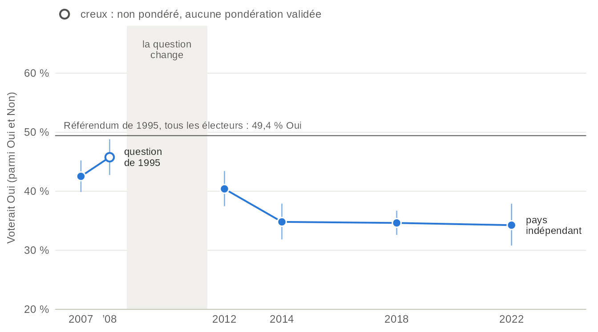
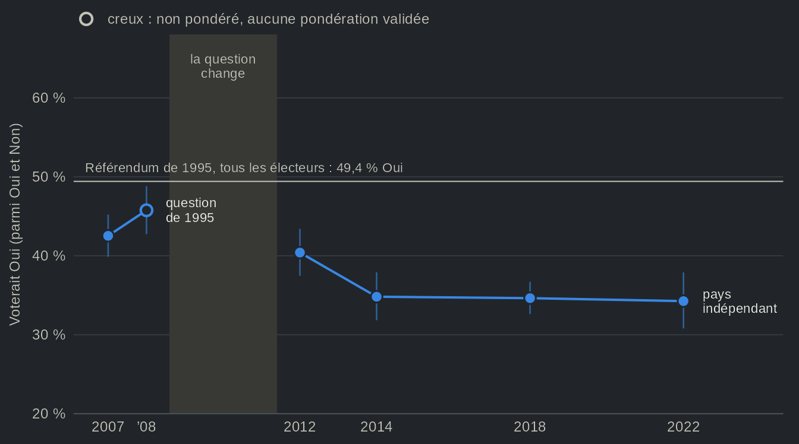
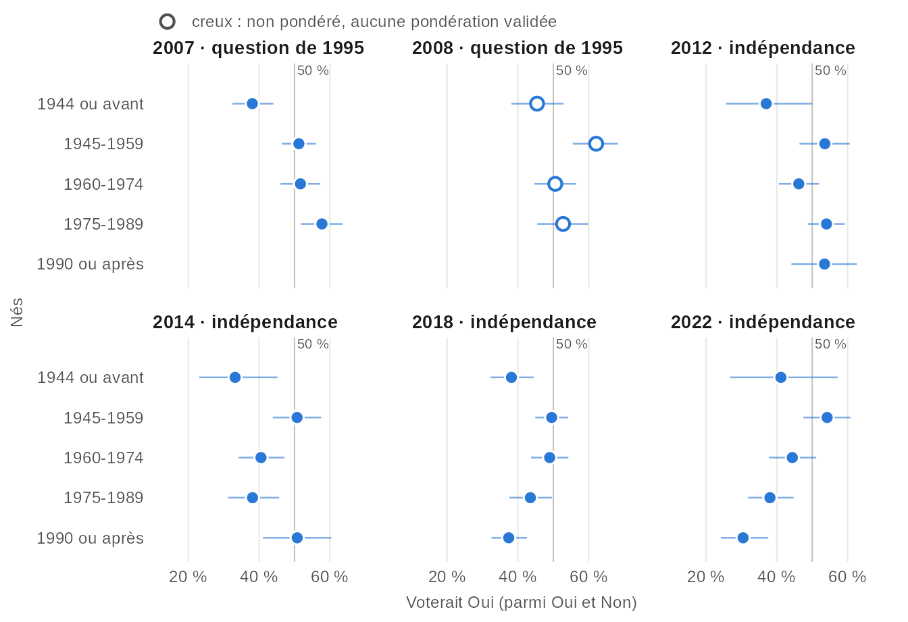
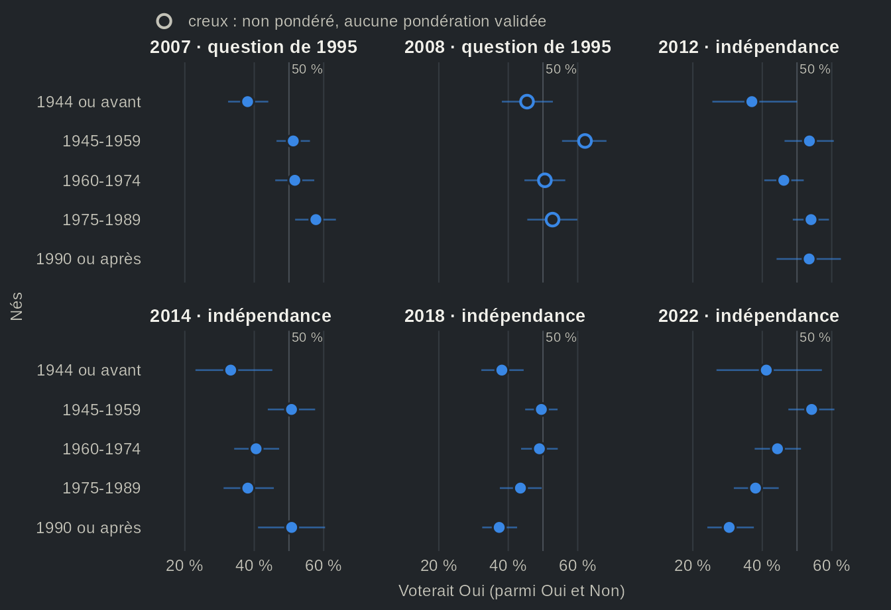
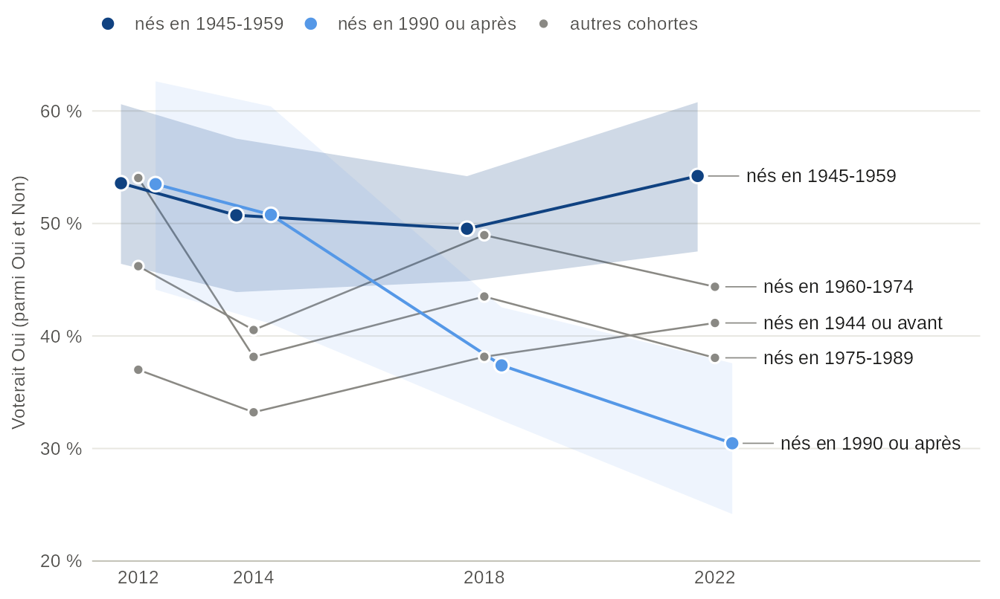
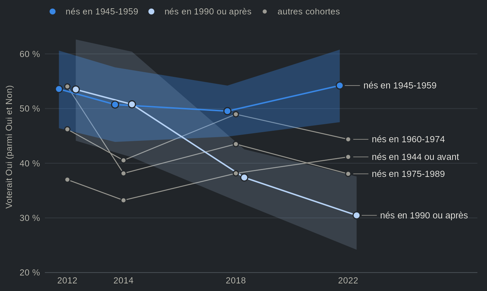
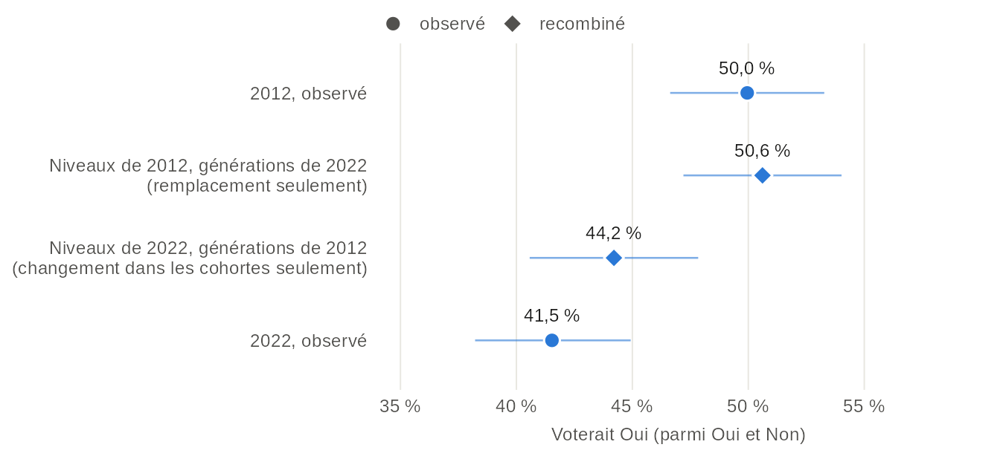
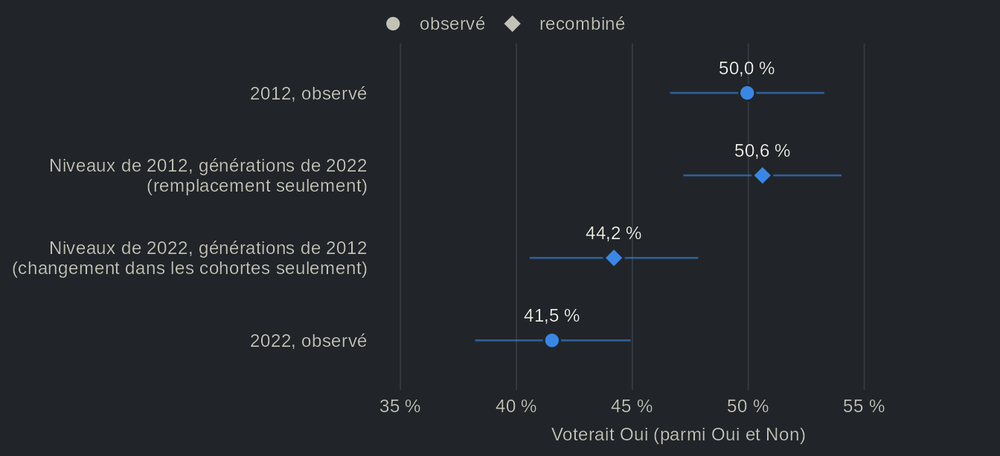

Les jeunes sont-ils encore les plus souverainistes ? L'appui à la souveraineté selon la cohorte, 2007-2022
Source:vignettes/articles/fr-souverainete-generations.Rmd
fr-souverainete-generations.RmdCette page télécharge 6 études (environ 13 Mo) la
première fois qu’elle s’exécute.
options(qesR.cache = "disk") les garde sur le disque pour
les sessions suivantes.
On a longtemps cru que le temps jouait en faveur du projet souverainiste. Selon cette ancienne croyance, les jeunes votaient Oui en plus grand nombre que leurs aînés, et chaque nouvelle génération allait grossir les rangs du Oui. La part qui revient aux générations et celle qui revient au cycle de vie dans cet écart ont d’ailleurs fait l’objet d’une étude à part entière (Dufresne, Tessier et Montigny, 2019). Une lecture plus récente va dans le sens inverse. Mahéo et Bélanger (2018) ont montré que le recul du Parti québécois (PQ) en 2014 se concentrait chez les millénariaux, moins enclins que leurs aînés à faire de la souveraineté une priorité, et Daoust et Gareau-Paquette (2024) soulignent que la diminution du poids électoral des baby-boomers pourrait modifier les clivages qui structurent la politique québécoise. Selon cette lecture plus récente, les jeunes se sont détournés de l’indépendance, et le remplacement générationnel, soit l’arrivée de nouvelles cohortes à mesure que les plus âgées quittent l’électorat, joue désormais contre le Oui.
Le vote péquiste ne permet toutefois pas de savoir si l’appui à l’indépendance a suivi la même pente et, le cas échéant, si ce changement tient au remplacement d’une génération par une autre ou à un changement à l’intérieur des générations elles-mêmes. Les Études électorales québécoises permettent de suivre les cohortes de naissance francophones de 2007 à 2022 et de répondre à ces deux questions. Comme chaque étude interroge de nouvelles personnes, nous suivons des cohortes, et non des individus.
En 2007, les francophones nés de 1975 à 1989 formaient la cohorte la plus souverainiste : 58 % d’entre eux auraient voté Oui à la question de 1995, contre 38 % des personnes nées en 1944 ou avant. En 2022, les francophones nés en 1990 ou après étaient les moins souverainistes : 30 % voteraient Oui à un pays indépendant, contre 54 % des personnes nées de 1945 à 1959, soit à peu près les baby-boomers. Autrement dit, l’écart entre les générations ne s’est pas refermé ; il s’est inversé. La lecture plus récente voit donc juste quant au niveau, mais moins quant au mécanisme. Selon l’année de référence, le remplacement des générations explique de rien du tout à 2,7 des 8,5 points perdus chez les francophones depuis 2012. L’essentiel du recul s’est produit à l’intérieur des cohortes.
Le changement de question en 2012


Source : Études électorales québécoises, 2007 à 2022, tous les répondants. Les études de 2007 et de 2008 ont posé la question du référendum de 1995, qui offrait un partenariat avec le Canada, et ont relancé les indécis ; à partir de 2012, les études portent sur un pays indépendant. L’étude de 2008 n’a aucune pondération validée et n’est pas pondérée (point creux).
Vue en tableau
| Élection | Étude | Question | Oui, % [IC à 95 %] | n | Pondération |
|---|---|---|---|---|---|
| 2007 | EEQ 2007 | La question de 1995 (partenariat) | 42,5 [39,9 ; 45,2] | 2011 | pondéré |
| 2008 | EEQ 2008 | La question de 1995 (partenariat) | 45,8 [42,7 ; 48,8] | 1038 | non pondéré : aucune pondération validée |
| 2012 | EEQ 2012 | Un pays indépendant | 40,4 [37,5 ; 43,4] | 1323 | pondéré |
| 2014 | EEQ 2014 | Un pays indépendant | 34,8 [31,8 ; 37,9] | 1353 | pondéré |
| 2018 | EEQ 2018 | Un pays indépendant | 34,6 [32,6 ; 36,7] | 2558 | pondéré |
| 2022 | EEQ 2022 | Un pays indépendant | 34,3 [30,8 ; 37,9] | 1284 | pondéré |
Avant de comparer les cohortes, un mot sur la question elle-même. Les études de 2007 et de 2008 ont repris la question du référendum de 1995, qui offrait un partenariat avec le Canada, et ont relancé les indécis en leur demandant de quel côté ils penchaient. À partir de 2012, elles portent plutôt sur la possibilité que le Québec devienne un pays indépendant, sans relance. Dans ces études, le premier libellé recueille plus de Oui que le second. On sait depuis longtemps que le libellé influe sur l’appui à la souveraineté (Yale et Durand, 2011), et le changement de libellé coïncide ici avec l’intervalle entre les élections de 2008 et de 2012 : les niveaux de part et d’autre de la bande grise ne se comparent donc pas. Sur la question de l’indépendance, l’appui de l’ensemble des répondants passe de 40 % en 2012 à 35 % en 2014, puis demeure presque stable (34 % en 2022). C’est pourquoi nous comparons les cohortes à l’intérieur d’une même étude et d’une même question, en nous attardant à l’ordre des cohortes plutôt qu’à leur niveau.
L’ordre des cohortes s’inverse


Source : Études électorales québécoises, 2007 à 2022, répondants de langue maternelle française. Les études de 2007 et de 2008 ont posé la question de 1995, les autres portent sur un pays indépendant : comparer l’ordre des cohortes dans un panneau, pas les niveaux d’un panneau à l’autre. L’étude de 2008 n’a aucune pondération validée et n’est pas pondérée (points creux). Les cohortes de moins de 30 répondants ne sont pas tracées.
Vue en tableau
| Élection | Question | Cohorte | Oui, % [IC à 95 %] | n | Pondération |
|---|---|---|---|---|---|
| 2007 | La question de 1995 (partenariat) | nés en 1944 ou avant | 38,1 [32,5 ; 44,0] | 343 | pondéré |
| 2007 | La question de 1995 (partenariat) | nés en 1945-1959 | 51,2 [46,4 ; 56,0] | 588 | pondéré |
| 2007 | La question de 1995 (partenariat) | nés en 1960-1974 | 51,7 [46,0 ; 57,3] | 406 | pondéré |
| 2007 | La question de 1995 (partenariat) | nés en 1975-1989 | 57,8 [51,8 ; 63,5] | 379 | pondéré |
| 2008 | La question de 1995 (partenariat) | nés en 1944 ou avant | 45,4 [38,2 ; 52,9] | 174 | non pondéré : aucune pondération validée |
| 2008 | La question de 1995 (partenariat) | nés en 1945-1959 | 62,1 [55,5 ; 68,3] | 219 | non pondéré : aucune pondération validée |
| 2008 | La question de 1995 (partenariat) | nés en 1960-1974 | 50,5 [44,7 ; 56,4] | 275 | non pondéré : aucune pondération validée |
| 2008 | La question de 1995 (partenariat) | nés en 1975-1989 | 52,7 [45,5 ; 59,9] | 182 | non pondéré : aucune pondération validée |
| 2008 | La question de 1995 (partenariat) | nés en 1990 ou après | n < 30 | 4 | non pondéré : aucune pondération validée |
| 2012 | Un pays indépendant | nés en 1944 ou avant | 37,0 [25,6 ; 50,0] | 62 | pondéré |
| 2012 | Un pays indépendant | nés en 1945-1959 | 53,6 [46,4 ; 60,6] | 214 | pondéré |
| 2012 | Un pays indépendant | nés en 1960-1974 | 46,2 [40,6 ; 51,9] | 327 | pondéré |
| 2012 | Un pays indépendant | nés en 1975-1989 | 54,0 [48,8 ; 59,2] | 374 | pondéré |
| 2012 | Un pays indépendant | nés en 1990 ou après | 53,5 [44,1 ; 62,6] | 120 | pondéré |
| 2014 | Un pays indépendant | nés en 1944 ou avant | 33,2 [23,1 ; 45,2] | 90 | pondéré |
| 2014 | Un pays indépendant | nés en 1945-1959 | 50,7 [43,9 ; 57,5] | 280 | pondéré |
| 2014 | Un pays indépendant | nés en 1960-1974 | 40,5 [34,2 ; 47,2] | 288 | pondéré |
| 2014 | Un pays indépendant | nés en 1975-1989 | 38,1 [31,2 ; 45,6] | 214 | pondéré |
| 2014 | Un pays indépendant | nés en 1990 ou après | 50,8 [41,1 ; 60,4] | 124 | pondéré |
| 2018 | Un pays indépendant | nés en 1944 ou avant | 38,2 [32,2 ; 44,4] | 280 | pondéré |
| 2018 | Un pays indépendant | nés en 1945-1959 | 49,5 [44,9 ; 54,2] | 471 | pondéré |
| 2018 | Un pays indépendant | nés en 1960-1974 | 49,0 [43,7 ; 54,3] | 362 | pondéré |
| 2018 | Un pays indépendant | nés en 1975-1989 | 43,5 [37,6 ; 49,6] | 288 | pondéré |
| 2018 | Un pays indépendant | nés en 1990 ou après | 37,4 [32,5 ; 42,5] | 544 | pondéré |
| 2022 | Un pays indépendant | nés en 1944 ou avant | 41,2 [26,8 ; 57,2] | 51 | pondéré |
| 2022 | Un pays indépendant | nés en 1945-1959 | 54,2 [47,5 ; 60,8] | 248 | pondéré |
| 2022 | Un pays indépendant | nés en 1960-1974 | 44,4 [37,8 ; 51,1] | 243 | pondéré |
| 2022 | Un pays indépendant | nés en 1975-1989 | 38,1 [31,8 ; 44,7] | 245 | pondéré |
| 2022 | Un pays indépendant | nés en 1990 ou après | 30,5 [24,2 ; 37,6] | 215 | pondéré |
D’abord, en 2007, sur la question de 1995, l’appui diminue avec l’âge : les francophones nés de 1975 à 1989 devancent de 20 points de pourcentage ceux nés en 1944 ou avant. C’est le portrait qu’a en tête l’ancienne croyance. L’étude de 2008, non pondérée, dresse un portrait moins net : elle place en tête les personnes nées de 1945 à 1959 (62 %). Ensuite, en 2012, la cohorte la plus jeune ne se démarque plus : les personnes nées en 1990 ou après (53 % de Oui) sont à égalité avec celles nées de 1945 à 1959 (54 %), et la cohorte née de 1960 à 1974 se situe 8 points plus bas (46 %). La cohorte la plus âgée, à 37 %, se situe plus bas encore, bien qu’elle ne repose que sur 62 répondants. Enfin, à partir de 2018, l’ordre s’inverse. En 2022, la cohorte la plus jeune est la moins souverainiste, 24 points sous celle née de 1945 à 1959 (54 %, n = 248). La cohorte la plus âgée, née en 1944 ou avant, se situe sous celle née de 1945 à 1959 à chaque élection, mais ses intervalles sont parmi les plus larges : seuls 51 francophones de cette cohorte ont répondu en 2022.
Quelles cohortes ont changé ?


Source : Études électorales québécoises de 2012, 2014, 2018 et 2022, répondants de langue maternelle française, données pondérées. La ligne de la cohorte la plus âgée repose sur moins de 100 répondants en 2012, 2014 et 2022. La cohorte la plus jeune s’agrandit à mesure que de nouveaux électeurs atteignent l’âge de voter : nés en 1990-1994 (18 à 22 ans) en 2012, nés en 1990-2004 en 2022.
Vue en tableau
| Élection | Cohorte | Oui, % [IC à 95 %] | n | Pondération |
|---|---|---|---|---|
| 2012 | nés en 1944 ou avant | 37,0 [25,6 ; 50,0] | 62 | pondéré |
| 2012 | nés en 1945-1959 | 53,6 [46,4 ; 60,6] | 214 | pondéré |
| 2012 | nés en 1960-1974 | 46,2 [40,6 ; 51,9] | 327 | pondéré |
| 2012 | nés en 1975-1989 | 54,0 [48,8 ; 59,2] | 374 | pondéré |
| 2012 | nés en 1990 ou après | 53,5 [44,1 ; 62,6] | 120 | pondéré |
| 2014 | nés en 1944 ou avant | 33,2 [23,1 ; 45,2] | 90 | pondéré |
| 2014 | nés en 1945-1959 | 50,7 [43,9 ; 57,5] | 280 | pondéré |
| 2014 | nés en 1960-1974 | 40,5 [34,2 ; 47,2] | 288 | pondéré |
| 2014 | nés en 1975-1989 | 38,1 [31,2 ; 45,6] | 214 | pondéré |
| 2014 | nés en 1990 ou après | 50,8 [41,1 ; 60,4] | 124 | pondéré |
| 2018 | nés en 1944 ou avant | 38,2 [32,2 ; 44,4] | 280 | pondéré |
| 2018 | nés en 1945-1959 | 49,5 [44,9 ; 54,2] | 471 | pondéré |
| 2018 | nés en 1960-1974 | 49,0 [43,7 ; 54,3] | 362 | pondéré |
| 2018 | nés en 1975-1989 | 43,5 [37,6 ; 49,6] | 288 | pondéré |
| 2018 | nés en 1990 ou après | 37,4 [32,5 ; 42,5] | 544 | pondéré |
| 2022 | nés en 1944 ou avant | 41,2 [26,8 ; 57,2] | 51 | pondéré |
| 2022 | nés en 1945-1959 | 54,2 [47,5 ; 60,8] | 248 | pondéré |
| 2022 | nés en 1960-1974 | 44,4 [37,8 ; 51,1] | 243 | pondéré |
| 2022 | nés en 1975-1989 | 38,1 [31,8 ; 44,7] | 245 | pondéré |
| 2022 | nés en 1990 ou après | 30,5 [24,2 ; 37,6] | 215 | pondéré |
Comparer les mêmes cohortes d’une étude à l’autre permet de voir d’où vient l’inversion. Les personnes nées de 1945 à 1959, qui ont voté aux référendums de 1980 et de 1995, sont demeurées stables : entre 50 % et 54 % d’entre elles voteraient Oui à chaque élection de 2012 à 2022. La cohorte née de 1975 à 1989, en revanche, passe de 54 % en 2012 à 38 % dès 2014, l’élection où le vote péquiste des millénariaux a reculé (Mahéo et Bélanger, 2018). Elle se situe ensuite à 44 % en 2018 et à 38 % en 2022, sans jamais revenir près de son niveau de 2012. La cohorte la plus jeune a décroché plus tard. Encore à 51 % en 2014, elle n’était plus qu’à 37 % en 2018 et à 30 % en 2022.
On pourrait objecter que les jeunes ne se sont pas tournés contre l’indépendance, mais qu’ils se sont détournés de la question, et que la part de Oui parmi les personnes qui répondent Oui ou Non masque une hausse de l’indécision. Les données appuient peu cette lecture. Parmi l’ensemble des francophones nés en 1990 ou après à qui la question a été posée, la part qui voterait Non passe de 41 % en 2012 à 56 % en 2022, alors que la part qui ne répond ni Oui ni Non passe de 12 % à 19 %. L’indécision a certes augmenté, mais l’essentiel du mouvement s’est fait vers le Non.
Remplacement ou changement à l’intérieur des cohortes ?
L’inversion peut provenir de deux sources. La première est le remplacement : les cohortes les plus âgées s’amenuisent, de nouveaux électeurs atteignent l’âge de voter, et le poids de chaque génération parmi les personnes qui prennent position change même si aucune cohorte ne change de réponse. La seconde est le changement à l’intérieur des cohortes : une même cohorte répond différemment d’une élection à l’autre. Pour départager les deux, nous recourons à un contrefactuel simple : nous appliquons le niveau d’appui de chaque cohorte en 2012 au poids des cohortes en 2022, et inversement.


Source : Études électorales québécoises de 2012 et de 2022, répondants de langue maternelle française, données pondérées. Les estimations recombinées pondèrent la part de Oui dans chacune des cinq cohortes de naissance d’une étude par le poids des cohortes dans l’autre étude. Le poids d’une cohorte est sa part des francophones ayant répondu Oui ou Non dans cette étude (données pondérées). La cohorte la plus jeune (née en 1990 ou après) reçoit son niveau de 2012, celui des électeurs de 18 à 22 ans, dans la ligne du remplacement seul, et son niveau de 2022, qui inclut les électeurs nés de 1995 à 2004, dans la ligne du changement dans les cohortes.
Vue en tableau
| Estimation | Oui, % [IC à 95 %] |
|---|---|
| 2012, observé | 50,0 [46,6 ; 53,3] |
| Niveaux de 2012, générations de 2022 (remplacement seulement) | 50,6 [47,2 ; 54,0] |
| Niveaux de 2022, générations de 2012 (changement dans les cohortes seulement) | 44,2 [40,6 ; 47,8] |
| 2022, observé | 41,5 [38,2 ; 44,9] |
Chez les francophones, l’appui à l’indépendance a reculé de 8,5 points entre 2012 et 2022, passant de 50,0 % à 41,5 %. Si chaque cohorte avait conservé son niveau de 2012, le nouveau poids des générations aurait laissé l’appui à 50,6 %, soit un niveau pratiquement inchangé. Cela s’explique par le fait qu’en 2012, les cohortes les plus nombreuses étaient proches les unes des autres, de sorte qu’il importait peu que l’une grossisse et que l’autre s’amenuise. À l’inverse, les niveaux de 2022 appliqués au poids des cohortes de 2012 donnent déjà 44,2 %. Autrement dit, l’essentiel du recul s’est produit à l’intérieur des cohortes. Le constat tient aussi lorsque nous suivons uniquement les francophones nés de 1990 à 1994, qui avaient de 18 à 22 ans en 2012, soit un groupe fermé auquel aucun nouveau venu ne s’ajoute : 53 % auraient voté Oui en 2012 (n = 120), contre 32 % en 2022 (n = 96). L’intervalle de cette dernière estimation est large, de 23 % à 43 %, mais il ne chevauche pas celui de 2012 (de 44 % à 63 %).
Cela dit, les deux mécanismes ne sont pas indépendants l’un de l’autre. Maintenant que les jeunes sont moins souverainistes que leurs aînés, le remplacement joue contre le Oui, dans le sens de la mise en garde de Daoust et Gareau-Paquette (2024) : aux niveaux de 2022, le changement du poids des générations depuis 2012 retranche à lui seul 2,7 des 8,5 points perdus.
Conclusion
Au final, chacune des deux lectures saisit une partie du portrait. L’ancienne croyance tenait en 2007, alors que la cohorte née de 1975 à 1989 était la plus souverainiste sur la question de 1995. Elle ne tenait plus en 2012, alors que les personnes nées en 1990 ou après étaient à égalité avec celles nées de 1945 à 1959, et l’ordre s’était inversé en 2022. La lecture plus récente voit juste quant au niveau : l’appui à l’indépendance est aujourd’hui le plus faible chez les jeunes et le plus élevé chez les personnes nées de 1945 à 1959. Elle voit moins juste quant au mécanisme. Le recul observé depuis 2012 tient surtout à un changement à l’intérieur des cohortes : selon l’année de référence, le remplacement en explique de rien du tout à 2,7 des 8,5 points, et il n’a commencé à jouer contre le Oui qu’une fois ce changement survenu chez les jeunes. Encore faut-il ajouter que les jeunes ne forment pas un bloc homogène. Daoust et Gareau-Paquette (2026) montrent que la génération Z s’inquiète davantage du français que les millénariaux, et la cohorte la plus jeune de cette page réunit les deux.
Notre analyse comporte trois limites. Premièrement, les échantillons sont modestes. Chaque étude compte entre 867 et 1 971 francophones ayant répondu Oui ou Non : une cohorte donnée, une année donnée, repose donc sur environ 600 répondants tout au plus, et la plus âgée sur beaucoup moins. Deuxièmement, les études ne suivent pas les mêmes personnes : nous observons des cohortes, non des individus, qui changent. Il s’agit d’échantillons indépendants, recueillis à des moments différents (pendant la campagne en 2022, après l’élection pour les autres) et de manières différentes (par téléphone en 2008, en ligne à partir de 2012), de sorte que le changement à l’intérieur d’une cohorte porte aussi la trace de ces différences. La cohorte la plus jeune de 2022 comprend en outre des électrices et des électeurs qui n’étaient pas encore majeurs en 2012, d’où l’intérêt de suivre à part les personnes nées de 1990 à 1994. Troisièmement, cette page décrit des cohortes ; elle n’explique pas pourquoi elles ont changé. La période qui suit 2014 a aussi vu l’essor de la Coalition avenir Québec (CAQ) et de Québec solidaire puis, en 2022, du Parti conservateur du Québec, de même que l’arrivée de nouveaux enjeux. Une cohorte qui s’est détournée de la souveraineté dans la vingtaine peut y revenir, et les prochaines Études électorales québécoises diront si cette inversion est un trait durable des jeunes générations ou un moment de leur parcours politique.
Pour aller plus loin
- Daoust, Jean-François et Thomas Gareau-Paquette. 2024. « Is Quebec independence still key in making sense of Canadian elections? A longitudinal analysis (2000–2021) ». Regional & Federal Studies 34 (5) : 781–806. https://doi.org/10.1080/13597566.2023.2233422
- Daoust, Jean-François et Thomas Gareau-Paquette. 2026. « De plus en plus inquiets : qui sont les Québécois qui considèrent le français comme menacé et quelles en sont les conséquences électorales? ». Revue canadienne de science politique / Canadian Journal of Political Science 59 (1) : 61–80. https://doi.org/10.1017/S0008423925100942
- Dufresne, Yannick, Charles Tessier et Eric Montigny. 2019. « Generational and life-cycle effects on support for Quebec independence ». French Politics 17 (1) : 50–63. https://doi.org/10.1057/s41253-019-00083-9
- Mahéo, Valérie-Anne et Éric Bélanger. 2018. « Is the Parti Québécois bound to disappear? A study of the current generational dynamics of electoral behaviour in Quebec ». Canadian Journal of Political Science 51 (2) : 335–356. https://doi.org/10.1017/S0008423917001147
- Yale, François et Claire Durand. 2011. « What did Quebeckers want? Impact of question wording, constitutional proposal and context on support for sovereignty, 1976–2008 ». American Review of Canadian Studies 41 (3) : 242–258. https://doi.org/10.1080/02722011.2011.594517
À propos des données
- Études. Une Étude électorale québécoise par élection, de 2007 à 2022. Les sondages de 1998 n’ont pas demandé l’année de naissance, et les panels menés lors des mêmes élections sont écartés, de sorte que chaque élection ne compte qu’une fois.
- Question. La part de Oui parmi les personnes qui voteraient Oui ou Non à un référendum sur l’indépendance du Québec (2012 à 2022) ou sur la question de 1995, qui offrait un partenariat avec le Canada (2007, 2008 ; les indécis ont été relancés pour savoir de quel côté ils penchaient). Les personnes qui n’iraient pas voter, ne savent pas ou refusent de répondre sont exclues de cette part, sauf dans le paragraphe sur l’indécision.
- Cohortes et langue. Les cohortes sont construites à partir de l’année de naissance. Les francophones sont les répondants de langue maternelle française. En 2007, en 2014 et en 2022, celles et ceux qui ont déclaré deux langues maternelles sont exclus (les fichiers de 2012 et de 2018 ne comportent pas une telle réponse). L’étude de 2018 a aussi interrogé des jeunes de 16 et 17 ans ; ils sont conservés, dans la cohorte la plus jeune.
- Moment et pondération. L’étude de 2022 a posé la question pendant la campagne, les autres après l’élection. Chaque étude est pondérée, sauf celle de 2008, qui n’a aucune pondération validée et ne l’est donc pas (points creux ; voir le tableau des pondérations).
- Reproduire la page. Les données proviennent d’un seul appel :
h <- qes_harmonize(
studies = c("qes2007", "qes2008", "qes2012", "qes2014", "qes2018", "qes2022"),
targets = c("sov_support", "birth_year", "lang_mother"),
missing = "reasons", quiet = TRUE
)